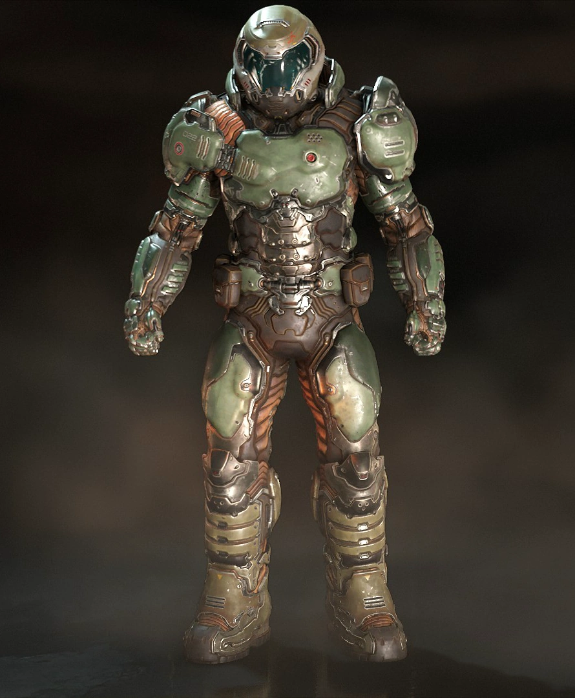
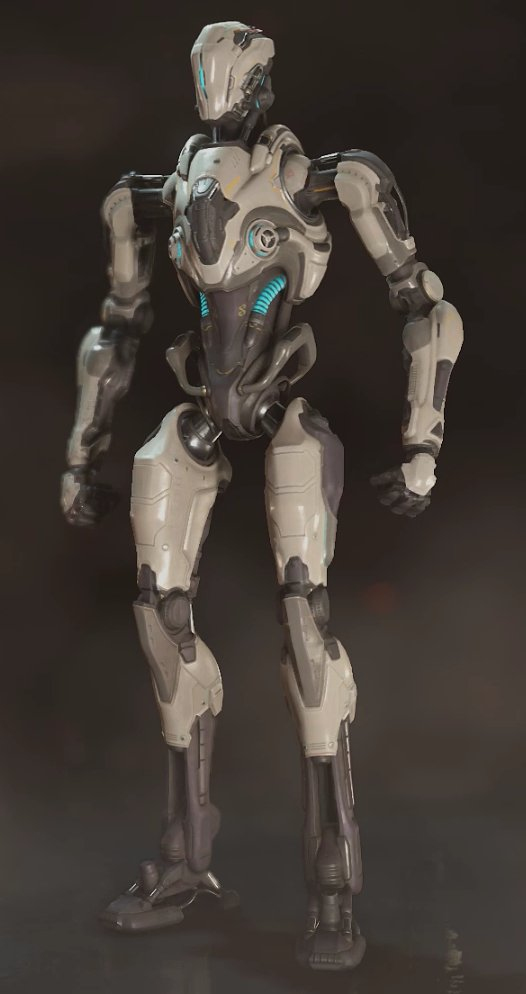
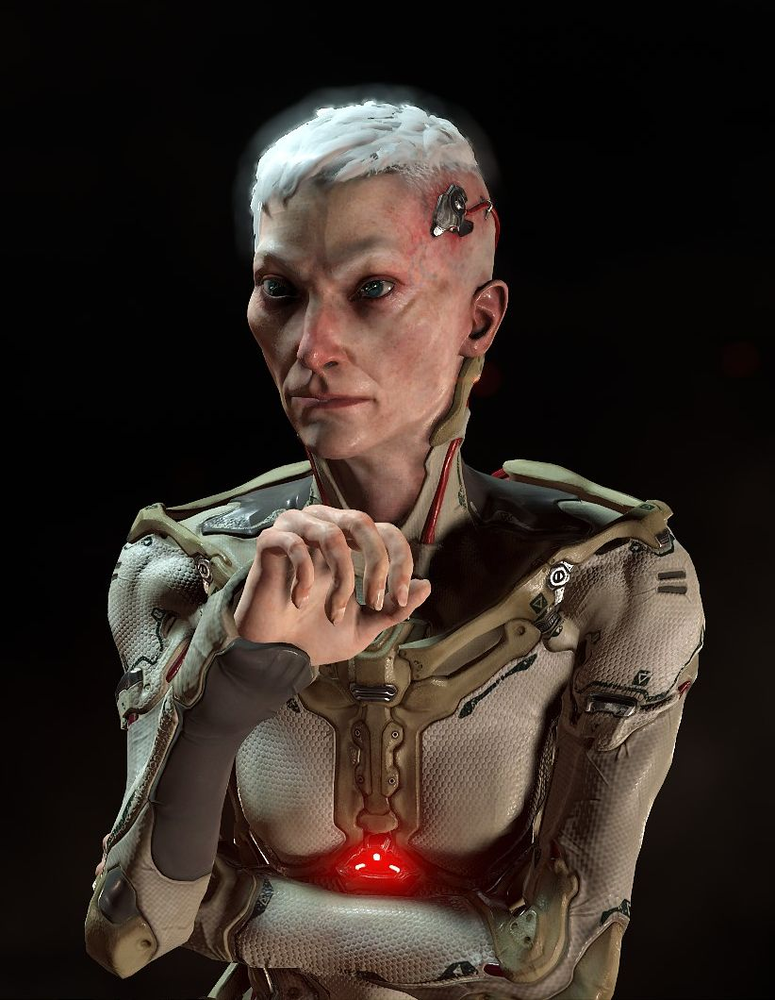

-
Doom Slayer: The silent and chaotic protagonist, hellbent on killing any demon he encounters.
Turned into a killing machine by the makyrs, he only has a one goal in mind; Rip and Tear.

-
Dr. Samuel Hayden: The supporting character known as a cyborg scientist with questionable ethics involving argent energy.
He guides The Slayer across the UAC Facility but also is angered by his rather brutal methods of dealing with situations.

-
Olivia Pierce: The antagonist known as the Head of UAC research, responsible for opening the gates of Hell.
